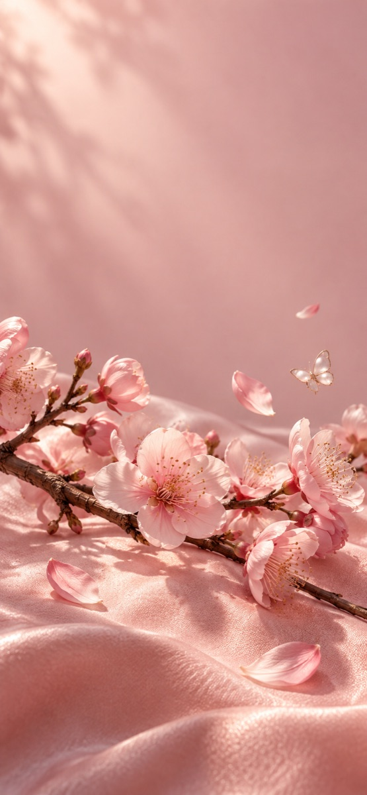
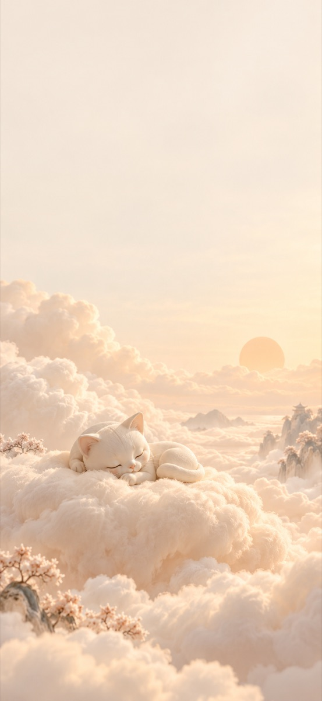
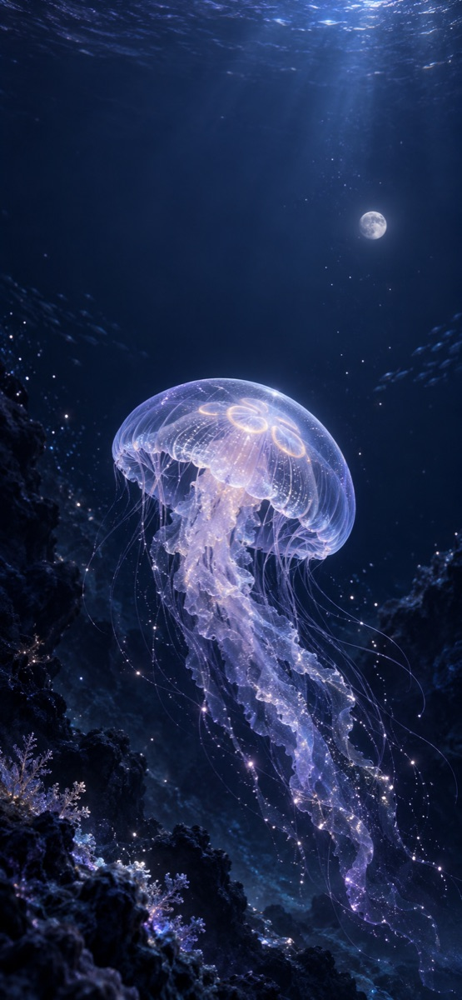
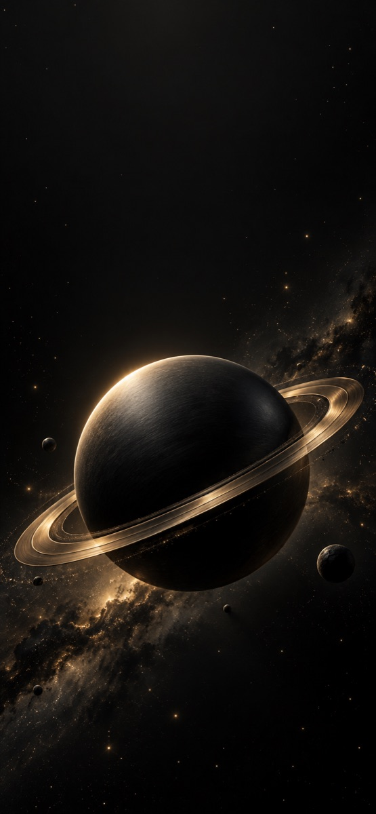

小小一格，也要合心意。
六套同色系主题，让照片、日历、倒数日、文字和每日打卡，自然融入你的桌面。
组件排版示意 · 实际布局由系统尺寸决定让喜欢的风景，陪你度过每个日常。
从一张壁纸，到一方小组件，
再到只属于此刻的专注。
计划支持 iPhone 17 系列及后续机型 · iOS 26 或更新版本

把日子，过成喜欢的模样萌宠、花卉、自然、海岸、梦境、极简。
收藏一眼喜欢的，也为今天换一种颜色。



首版计划收录 100 张原创壁纸，分为 6 类。上图为精选作品；素材由 AI 辅助创作并经人工挑选。
六套同色系主题，让照片、日历、倒数日、文字和每日打卡，自然融入你的桌面。
组件排版示意 · 实际布局由系统尺寸决定导入照片，调整构图与明暗，添上文字和贴纸。存成草稿慢慢打磨，再将作品保存或分享。
创作效果示意 · 支持静态图片与 3 秒轻推镜 Live Photo 导出选一段时间，做一件想做的事。专注计时通过实时活动，在灵动岛与锁定屏幕显示进度，抬眼就能看见。
实时活动提供状态与倒计时，不是常驻动画。系统设置会影响显示。Live Photo 能否作为动态锁屏播放，取决于 iOS 的识别与设置。
首发计划面向中国大陆 App Store · 上线时间以实际发布为准
使用帮助与联系支持